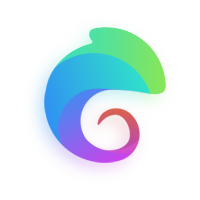
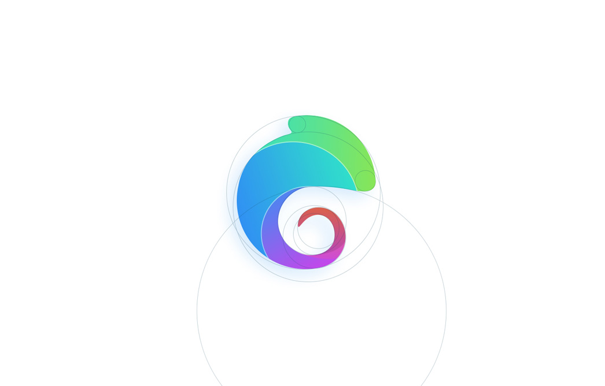

Easy Project Vue
组件
GitHub
(opens new window)
关于
(opens new window)

Easy Project Vue
一个基于Vue2的工具库
快速上手 →
🔥 基于vue2驱动
选择一个成熟优秀的框架。能使开发更加简单效率。
🍬完全免费开源
工具库开发初衷出于对开源项目开发的兴趣
⚡基于常用业务场景设计
提炼自实战项目中高度复用的代码集，丰富的代码片段和编码指引。